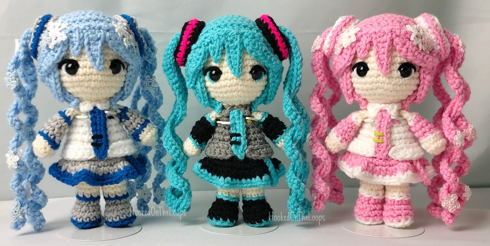

Según la tradición japonesa cada Amigurumi posee un alma, el cual nos acompaña y es nuestro amiguito y confidente de por vida, nos protege y consuela cuando nos sentimos tristes o confundidos.
La terapia del pulpo está ayudando a miles de bebés prematuros en unidades neonatales de diferentes hospitales. ¿Y esto qué es? Pequeños pulpos de crochet se entrelazan en las pequeñas manitas de los bebés porque, según los expertos, se consiguen grandes logros en la evolución y mejora de los bebés prematuros. La iniciativa de los pulpos de crochet para bebés prematuros comenzó en el Hospital de la Universidad de Aarhus en Dinamarca